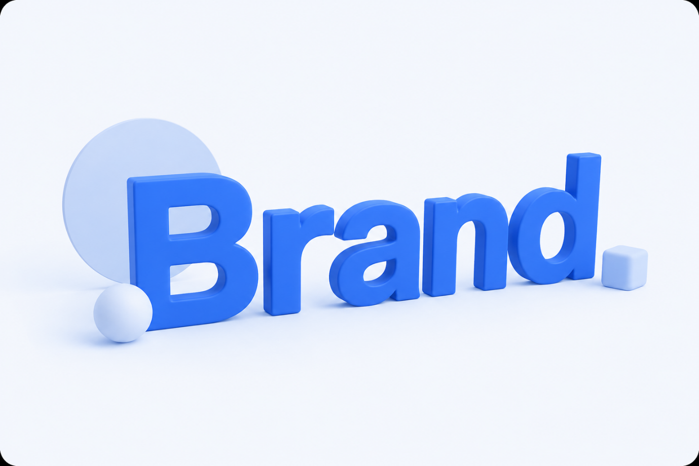

새로운 제품이 쏟아진다.
매일 새로운 브랜드가 등장하고, 새로운 콘텐츠가 만들어지며, 새로운 트렌드가 탄생한다.
오랫동안 마케팅은 '새로운 것'을 만드는 경쟁이었습니다.
브랜드는 끊임없이 새로운 제품을 출시했고, 소비자는 그중에서 마음에 드는 것을 선택했습니다.
하지만 최근에는 조금 다른 흐름이 나타나고 있습니다.
새로운 것을 만드는 것보다, 이미 존재하는 것에서 새로운 의미를 발견하는 소비가 늘어나고 있는 것입니다.
최근 KPR 인사이트연구소가 발표한 빅데이터 분석 결과에 따르면, 이러한 흐름은 콘텐츠, 식품, 패션 등 다양한 산업에서 동시에 나타나고 있습니다.
연구소는 이를 '재발견 소비'라고 정의했습니다.
레트로는 더 이상 과거를 흉내 내는 것이 아니다
가장 대표적인 사례는 레트로 소비입니다.
KPR 인사이트연구소에 따르면 레트로 감성과 관련된 언급량은 2023~2024년 약 12만 건 수준에서 2025~2026년에는 약 18만 건으로 증가했습니다.
눈에 띄는 것은 단순한 언급량 증가가 아닙니다.
연관 키워드가 달라졌습니다.
과거에는 다음과 같은 외형적 복고를 의미하는 키워드가 중심이었습니다.
- 빈티지
- LP
- 아날로그
- 스타일
반면 최근에는 이러한 감정 중심 키워드가 함께 등장하고 있습니다.
- 위로
- 공감
- 따뜻함
- 어린 시절
- 낭만
이는 소비자들이 과거의 물건이나 문화를 단순히 따라 하는 것이 아니라, 그 시절의 감정과 경험을 현재의 방식으로 다시 소비하고 있다는 의미입니다.
브랜드보다 소비자가 먼저 움직인다
과거에는 브랜드가 새로운 것을 제안했습니다.
제품을 만들고, 광고를 만들고, 유행을 만들었습니다.
그리고 소비자는 그 흐름을 따라갔습니다.
하지만 지금은 구조가 조금 달라지고 있습니다.
소비자가 먼저 새로운 조합을 만들고, 소비자가 먼저 새로운 의미를 발견하고, 브랜드는 그것을 제품과 마케팅으로 연결합니다.
대표적인 사례가 '모디슈머' 문화입니다.
온라인에서 소비자가 만든 레시피가 실제 제품 출시로 이어지기도 하고, 예상하지 못했던 제품 조합이 새로운 상품 기획의 출발점이 되기도 합니다.
유행의 출발점이 브랜드에서 소비자로 이동하고 있는 것입니다.

그래서 브랜드의 오래된 자산이 다시 중요해지고 있다
이 변화는 브랜드 전략에도 영향을 미칩니다.
예전에는 새로운 제품을 만드는 것이 중요했습니다.
하지만 재발견 소비가 확산되면서 이미 보유한 자산의 가치가 다시 주목받고 있습니다.
- 스테디셀러
- 브랜드 헤리티지
- 과거 광고 캠페인
- 단종 제품
- 오래된 패키지 디자인
실제로 최근 많은 브랜드들이 과거 제품을 재출시하거나, 오래된 브랜드 스토리를 다시 활용하는 이유도 여기에 있습니다.
소비자들은 완전히 새로운 것보다 익숙한 것에서 새로운 의미를 발견하는 데 더 큰 즐거움을 느끼고 있기 때문입니다.
마케터가 주목해야 할 변화
이번 분석 결과를 보며 가장 흥미롭게 느껴졌던 부분은 소비자의 역할 변화입니다.
과거에는 브랜드가 유행을 만들고 소비자가 반응했습니다.
하지만 지금은 소비자가 먼저 의미를 만들고 브랜드가 이를 확장하는 구조가 나타나고 있습니다.
물론 모든 제품과 브랜드에 적용되는 이야기는 아닙니다.
다만 분명한 것은 소비자가 단순 구매자를 넘어 문화와 트렌드를 함께 만드는 주체로 변화하고 있다는 점입니다.
앞으로 브랜드에게 중요한 질문은 "무엇을 새롭게 만들 것인가"보다 "소비자가 이미 좋아하고 있는 것을 어떻게 발견할 것인가"가 될지도 모릅니다.